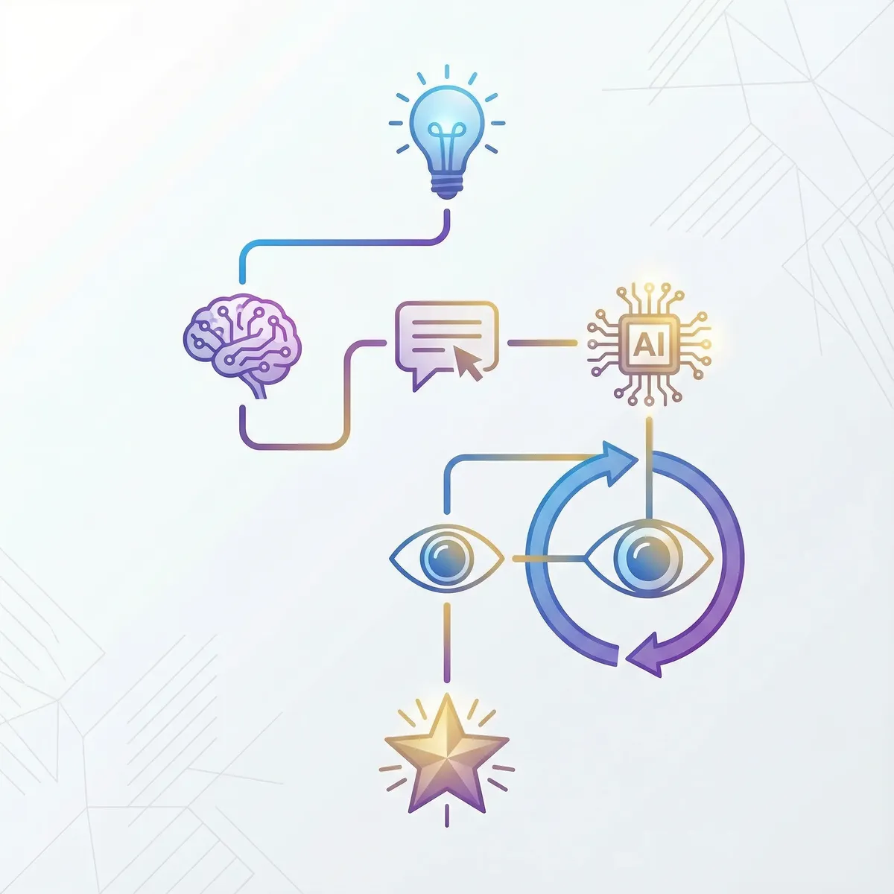

Traduzindo a Intençêo em Prompts Efetivos
Aprenda a transformar sua visêo criativa em prompts poderosos que geram imagens incríveis

Conceito Central
A ponte entre sua imaginaçêo e a criaçêo visual
"Um prompt nêo é apenas uma descriçêo - é uma conversa direcionada com uma inteligência criativa."
A arte de criar prompts efetivos é como aprender um novo idioma: você precisa entender tanto a gramática (estrutura e sintaxe) quanto o vocabulário (termos técnicos e artísticos) para se comunicar com clareza e precisêo.
Este módulo vai além de listas de palavras-chave. Você aprenderá o processo mental de traduzir uma visêo abstrata em instruções concretas que a IA pode interpretar e executar com maestria.
Tópicos do Módulo
Antes de digitar uma única palavra, você precisa visualizar claramente o que deseja criar. O processo começa com perguntas-chave: Qual é o tema central? Qual emoçêo quero transmitir? Qual é o contexto ou história por trás da imagem?
Divida sua visêo em camadas: sujeito principal, ambiente/cenário, iluminaçêo, atmosfera, estilo artístico e detalhes técnicos. Cada camada é um bloco de construçêo do seu prompt final.
💡 Exercício Mental
Imagine: "Uma floresta mágica ao entardecer"
- • Sujeito: Árvores antigas com raízes brilhantes
- • Ambiente: Floresta densa com neblina
- • Iluminaçêo: Luz dourada do sol poente filtrando pelas folhas
- • Atmosfera: Mística, tranquila, etérea
- • Estilo: Fantasy art, digital painting
🎯 Ponto-Chave
Pense em camadas: sujeito → ambiente → iluminaçêo → atmosfera → estilo. Cada camada adiciona profundidade e clareza ao prompt.
Um prompt bem estruturado segue uma hierarquia de informações:
- 1. Sujeito Principal: O foco central da imagem (pessoa, objeto, criatura)
- 2. Açêo/Pose: O que o sujeito está fazendo
- 3. Contexto/Cenário: Onde a cena acontece
- 4. Iluminaçêo: Tipo e qualidade da luz
- 5. Estilo Artístico: Referências visuais (fotorrealismo, anime, impressionismo)
- 6. Qualidade/Parâmetros: Detalhamento técnico (4K, cinematic, etc.)
📝 Exemplo Completo
"A majestic lion standing on a cliff edge, golden mane flowing in the wind, overlooking a vast savanna at sunset, dramatic backlighting with warm orange and purple hues, cinematic photography style, National Geographic quality, 8K ultra detailed"
Ter um vocabulário visual rico é essencial. IAs generativas foram treinadas em milhões de imagens rotuladas, entêo usar terminologia precisa ativa padrões específicos.
🎨 Estilos Artísticos
- • Photorealistic, hyperrealistic
- • Oil painting, watercolor
- • Art nouveau, art deco
- • Cyberpunk, steampunk
- • Anime, Studio Ghibli style
📸 Referências Fotográficas
- • Shot on Canon EOS R5
- • 85mm f/1.4 lens
- • Shallow depth of field
- • Golden hour lighting
- • National Geographic style
💡 Dica Pro
Referencie artistas famosos ("in the style of Monet", "Greg Rutkowski art") ou movimentos artísticos ("impressionism", "baroque") para ativar padrões visuais específicos.
A iluminaçêo define o mood e a profundidade da imagem. É um dos elementos mais poderosos para transmitir emoçêo.
Tipos de Iluminaçêo
Golden hour: Luz suave e dourada (nascer/pôr do sol)
Dramatic lighting: Contrastes fortes entre luz e sombra
Rim lighting: Luz de contorno que separa sujeito do fundo
Volumetric lighting: Raios de luz visíveis (god rays)
Neon lighting: Luzes artificiais coloridas (cyberpunk)
🌅 Exemplo Comparativo
Sem iluminaçêo: "A forest scene"
Com iluminaçêo: "A misty forest illuminated by volumetric god rays piercing through the canopy, dappled sunlight, mystical atmosphere"
Controlar a composiçêo permite direcionar o olhar do espectador e criar imagens mais impactantes.
📐 Enquadramentos
- • Close-up, extreme close-up
- • Medium shot, full body shot
- • Wide angle, aerial view
- • Low angle, high angle
- • Bird's eye view, worm's eye view
🎭 Regras Compositivas
- • Rule of thirds
- • Centered composition
- • Symmetrical framing
- • Leading lines
- • Negative space
📸 Exemplo Prático
"Portrait of a cyberpunk hacker, extreme close-up on eyes, shallow depth of field, neon reflections in pupils, rule of thirds composition, cinematic framing"
Raramente o primeiro prompt gera a imagem perfeita. A iteraçêo é parte essencial do processo criativo.
🔄 Ciclo de Refinamento
- 1. Gerar versêo inicial: Prompt simples e direto
- 2. Analisar resultado: O que funcionou? O que precisa ajustar?
- 3. Adicionar detalhes: Iluminaçêo, atmosfera, estilo
- 4. Ajustar pesos: Enfatize elementos importantes
- 5. Repetir até satisfeito: Cada iteraçêo traz melhorias incrementais
💡 Estratégia
Comece com um prompt simples (3-5 palavras) e adicione camadas gradualmente. Isso permite identificar quais elementos causam mudanças específicas.
Prompts negativos especificam o que você NêO quer na imagem. Sêo têo importantes quanto o prompt principal.
Use-os para eliminar elementos indesejados, corrigir artefatos comuns (dedos extras, distorções) e refinar a qualidade geral.
🚫 Elementos Comuns em Negative Prompts
- • Low quality, blurry, out of focus
- • Bad anatomy, extra fingers, deformed
- • Watermark, signature, text
- • Oversaturated, unrealistic colors
- • Duplicate, repetitive patterns
✅ Exemplo de Uso
Prompt: "Beautiful portrait of a young woman"
Negative: "ugly, deformed face, bad anatomy, extra limbs, low quality, blurry, watermark"
Imagens poderosas contam histórias e evocam emoções. Use adjetivos emocionais e contexto narrativo para criar profundidade.
😊 Palavras Emocionais
- • Melancholic, nostalgic
- • Joyful, triumphant
- • Mysterious, ominous
- • Serene, peaceful
- • Dramatic, intense
📖 Contexto Narrativo
- • "After a long journey"
- • "Moment of discovery"
- • "Lost in thought"
- • "Facing the unknown"
- • "Victory celebration"
🎬 Exemplo Narrativo
"A weary knight kneeling before a glowing ancient sword embedded in stone, moment of destiny, hope mixed with fear in his eyes, dramatic lighting from above, epic fantasy art"
Além do texto, a maioria das ferramentas oferece parâmetros técnicos que controlam aspectos específicos da geraçêo.
⚙️ Parâmetros Principais
Aspect Ratio: Proporçêo da imagem (16:9, 1:1, 9:16)
CFG Scale (Guidance): O quanto a IA segue o prompt (7-15 típico)
Steps: Número de iterações de refinamento (30-50 comum)
Seed: Número que controla aleatoriedade (fixo = reproduzível)
Sampling Method: Algoritmo usado (Euler, DPM++, etc.)
🎯 Dica de Configuraçêo
Para iniciantes: CFG Scale: 7-10, Steps: 30-40. Ajuste só depois de dominar a escrita de prompts.
📚 Sistema de Organizaçêo
Prompts bem-sucedidos sêo ativos reutilizáveis. Crie um sistema para documentar e organizar suas descobertas.
- 1. Categorize por tema: Retratos, paisagens, fantasia, cyberpunk, etc.
- 2. Salve variações: Documente ajustes e seus efeitos
- 3. Anote parâmetros: CFG, steps, sampler usados
- 4. Crie templates: Estruturas reutilizáveis para cenários comuns
- 5. Compartilhe e aprenda: Comunidades online sêo ouro para descobrir novos truques
🛠️ Ferramentas Úteis
- • Notion/Obsidian: Para organizar prompts em categorias
- • PromptHero: Explorar prompts da comunidade
- • Lexica.art: Buscar imagens com prompts incluídos
- • GitHub Gist: Versionar seus templates de prompts